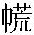

陳生弼教，字明允，燕人也，〔馮評〕提筆作伏。家貧，從副將軍賈綰作記室。泊舟洞庭，適猪婆龍浮水面，賈射之， 「射之」：黄本作「射」。中背；有魚銜龍尾不去，並獲之。鎖置桅間，奄存氣息；而龍吻張翕，似求援拯。生惻然心動，〔但評〕一念之仁，再生長生，享用不盡。〔馮評〕一點仁心，遂獲善報。請於賈而釋之；攜有金創藥，戲敷患處，縱之水中， 「水中」：康熙本作「於中」。浮沉逾刻而没。後年餘，生北歸，復經洞庭。大風覆舟，幸扳一竹簏，〔但評〕竹簏何來？漂泊終夜，絓木而止。 「絓」：青本、黄本作「挂」。援岸方升，有浮尸繼至，則其僮僕。力引出之，已就斃矣。慘怛無聊，坐對憩息， 「引出」：黄本作「引上」。「坐對」：青本、黄本作「對坐」，二十四卷本作「坐石」。但見小山聳翠，細柳摇青。行人絶少，無可問途，〔馮評〕作兩節叙。○是被溺後眼中光景。自遲明以及辰後，悵悵靡之。忽僮僕肢體微動， 「以及」：鑄本作「以至」。「肢」：青本、黄本作「之」。喜而捫之。無何，嘔水數斗，醒然頓蘇。 「醒然」：鑄本作「豁然」。〔但評〕僮僕亦蘇，恰映銜尾小魚。〔馮評〕一僕耳，其得生亦必作兩層寫，中間一隔，情事愈合，此文家之妙也。相與曝 曝：〔何註〕曝音僕，曬也。周禮·考工記：「 
生徊徨終夜，危不自安。辰刻向盡，女子又餉之。生哀求緩頰， 緩頰：〔吕註〕前漢書·魏豹傳：「漢王聞魏豹反，謂酈食其曰：『爲我緩頰，往説魏王豹。』」註：「謂徐言引譬也。」〔何註〕史記：「魏王豹叛，酈生緩頰往説之。」謂和緩其口頰以説之也。女曰：「公主不言殺，亦不言放。 「不言殺，亦不言放」：二十四卷本作「不言放，亦不言殺」，鑄本作「不言放，誰敢私放？」我輩下人，何敢屑屑瀆告！」既而斜日西轉，眺望方殷，女子坌息急奔而入， 此上十二字：青本、黄本「方殷」作「不已」，「女」上有「忽」字；「坌息」：康熙本、鑄本、異史本、二十四卷本作「坌身」。曰：「殆矣！〔馮評〕駭浪又起。〔但評〕一波未平，又生一波。多言者洩其事於王妃。妃展巾抵地，大駡狂傖，禍不遠矣！」生大驚，面如灰土，長跽請教。 「長跽」：康熙本、二十四卷本作「長跪」。忽聞人語紛挐， 紛挐：〔何註〕挐音呶，同拿。煩也，擾亂也。前漢書·霍去病傳：「漢、匈奴相紛挐。」謂亂相持搏也。△按：挐音如，又音拿。女摇手避去。數人持索，洶洶入户。内一婢熟視曰：「將謂何人，陳郎耶？」遂止持索者，曰：「且勿且勿，待白王妃來。」返身急去，少間來曰：「王妃請陳郎入。」生戰惕從之。〔但評〕水盡山窮，忽開生面，令人心膽稍放，耳目一新。回首過來，猶覺目爲之眩，膽爲之摇，心爲之戰。驚定而喜曰：「奇境也！」〔馮評〕不知葫蘆何藥，青龍白虎並行矣。經數十門户， 青本、黄本無「户」字。至一宫殿，碧箔 箔：〔何註〕通薄，簾也。曲禮：「帷薄之外不趨。」薄，中從甫。銀鈎；即有美姬揭簾，唱：「陳郎至 「陳郎」：鑄本、異史本、二十四卷本作「陳生」。——」上一麗者，袍服炫冶。 炫冶：〔何註〕炫音眩，耀光也。荀子·非相篇：「莫不美麗姚冶。」生伏地稽首，曰：「萬里孤臣，幸恕生命。」 「生命」：二十四卷本作「餘生」。妃急起，自曳之曰 異史本、二十四卷本無「自」字。「自曳」：鑄本作「拽」。：「我非君子，無以有今日。婢輩無知，致迕佳客，罪何可贖！」即設華筵， 「華筵」：鑄本、異史本作「筵」。酌以鏤杯。生茫然不解其故。妃曰：「再造之恩，恨無所報。 「所報」：康熙本作「所執」。息女蒙題巾之愛，當是天緣，今夕即遣奉侍。」〔馮評〕此等處迅疾，俗筆便添許多話説。生意出非望，神惝恍 惝恍：〔何註〕惝音敞。道德經所謂「恍兮惚兮」。而無着。日方暮，一婢前白：「公主已嚴妝 嚴妝：〔何註〕莊嚴也。唐書·駱賓王傳：「嚴服靚妝。」靚音静，妆從爿。訖。」遂引生就帳。 此上十二字：青本、黄本「前白」作「前曰」，二十四卷本「已嚴妝訖」作「嚴妝已竟」，「遂」作「妃命」。忽而笙管敖曹，階上悉踐花罽，門堂藩溷處處皆籠燭。數十妖姬扶公主交拜。麝蘭之氣， 「蘭」：青本、黄本作「香」。充溢殿庭。既而相將入幃，兩相傾愛。生曰：「羈旅之臣，生平不省拜侍。點污芳巾，得免斧鑕，幸矣；反賜姻好，實非所望。」公主曰：「妾母，湖君妃子，乃揚江王女。 「揚江」：青本作「江陽」。舊歲歸寧，偶遊湖上，爲流矢所中。蒙君脱免，又賜刀圭之藥，一門戴佩， 「戴佩」：黄本作「佩戴」。常不去心。〔但評〕「一門戴佩，常不去心」，長生之機，即在於此。郎勿以非類見疑。妾從龍君得長生訣，願與郎共之。」生乃悟爲神人，因問：「婢子何以相識？」〔但評〕以問答語作補筆。曰：「爾日，洞庭舟上曾有小魚銜尾，即此婢也。」又問：「既不見誅，何遲遲不賜縱脱？」笑曰：「實憐君才，但不自主。 「不自主」：鑄本、異史本、二十四卷本作「不得自主」。顛倒終夜，〔但評〕憐才之心，至於顛倒終夜，此時得叙衷曲，其快何如！他人不及知也。」生嘆曰：「卿，我鮑叔也。饋食者誰？」曰：「阿念，亦妾腹心。」 「腹心」：青本作「心腹」。生曰：「何以報德？」笑曰：「侍君有日，徐圖塞責未晚耳。」〔馮評〕阿念後不叙，已包含在中矣。此藏筆也。問：「大王何在？」曰：「從關聖征蚩尤 從關聖征蚩尤：〔吕註〕史記·五帝本紀：「軒轅之時，蚩尤作亂，不用帝命。於是黄帝乃徵師諸侯，與蚩尤戰於涿鹿之野，遂擒殺蚩尤。」註：「蚩尤，九黎之君也。」○彭宗古關帝實録：「古記云：宋大中祥符七年，解州奏解鹽出於池，歲收課利，以佐國用。近水减鹽少，虧失常課。此是災異，不可不察。上遣使往視。還報曰：『臣見一父老，自稱城隍神，令臣奏曰：爲鹽池之害者，蚩尤也。忽不見。』上召近臣吕夷簡至解池致祭。事訖之夕，夢神人戎衣怒言曰：『吾蚩尤也。上帝命我主此鹽池。今者天子立軒轅祠。軒轅吾仇也，我爲此不平，故絶池水耳。』夷簡還白其事。侍臣王欽若曰：『蚩尤邪臣也。臣知信州龍虎山張天師者，能使鬼神，若令治之，蚩尤不足慮也。』於是召天師問之。對曰：『自古忠烈之士没而爲神，蜀將關某忠而勇，陛下禱而召之，以討蚩尤，必有陰功。』上問：『今何神也？』對曰：『廟食荆門之玉泉。』上從之。移時，一美髯人擐甲佩劍，浮空而下。天師宣諭上旨云：『蚩尤爲妖如此，今天子欲將爲民除害，何如？』對曰：『容臣會嶽瀆陰兵至彼，並力爲清蕩之。』俄失所在。忽一日黑雲起於池上，大風暴至，雷電晦明，居人震恐。但聞空中金戈鐵馬之聲。久之，雲霧收斂，天日晴朗，池水如故。」未歸。」居數日，生慮家中無耗，懸念綦切，乃先以平安書遣僕歸。〔馮評〕此僮僕，看書者幾忘之矣。家中聞洞庭舟覆，妻子縗絰已年餘矣，僕歸始知不死；而音問梗塞， 「絰」：異史本作「經」。「問」：鑄本作「聞」。終恐漂泊難返。又半載，生忽至，裘馬甚都，囊中寶玉充盈。 「寶玉」：二十四卷本作「金寶」。由此富有巨萬，聲色豪奢，世家所不能及。七八年間，生子五人。日日宴集賓客，宫室飲饌之奉，窮極豐盛。或問所遇，言之無少諱。 「諱」：二十四卷本作「隱諱」。〔但評〕正欲以好生之德勉人，則所遇何容少諱？有童稚之交梁子俊者，宦遊南服十餘年，歸過洞庭，見一畫舫， 舫：〔何註〕舫音訪，小船也。左從舟。雕檻朱窗，笙歌幽細，緩蕩煙波。時有美人推窗憑眺。梁目注舫中， 「目注」：二十四卷本作「注目」。見一少年丈夫，科頭叠股 叠股：〔何註〕重叠其股而坐也。其上；傍有二八姝麗，挼莎交摩。 挼莎交摩：〔何註〕挼音捼，奴禾切；莎音蓑，以手切摩也。禮·曲禮：「共飯不澤手。」註：「澤，挼莎也。」又晉書：「東府聚樗捕，劉裕挼五木，久之即成盧焉。」〔但評〕從旁挼莎者，即念儒冠藴藉，提壺榼餉生之人，想塞責已久矣。念必楚襄貴官，而騶從殊少；凝眸審諦，則陳明允也，不覺憑欄酣叫。生聞呼罷棹， 「欄」：二十四卷本作「檻」。鑄本「叫」作「呼」，「聞呼」作「聞」。出臨鷁首， 鷁首：〔吕註〕淮南子·本經：「鳴鵠鷫鷞，稻粱饒餘，龍舟鷁首，浮吹以娱。此遯於水也。」註：「鷁，水鳥也，畫其象于船頭，故曰鷁首。」邀梁過舟。見殘肴滿案，酒霧猶濃。生立命撤去。頃之美婢三五，進酒烹茗，山海珍錯， 山海珍錯：〔何註〕山珍海錯也。錯，書·禹貢傳：「雜出也。」目所未睹。梁驚曰：「十年不見，何富貴一至於此！」笑曰：「君小覷窮措大 窮措大：〔何註〕謂秀才措辦大事也，其實叠韻字，會意可也。〔吕註〕按資暇録云：窮措大眼孔小。又云：代稱士流爲醋大，言其峭醋而冠四人之首，一説衣冠儼然，黎庶望之，有不可犯之色。犯必有驗，比於醋而更驗，故謂之焉。或云往有士人貧居新鄭之郊，以驢負醋，巡邑而賣，人指其醋馱而號之。新鄭多衣冠所居，因總被斯號。亦云鄭有醋溝，士流多居。其州溝之東，尤多甲族。以甲乙叙之，故曰醋大。然則措大當作醋大。曰醋、曰溝、皆自鄭地起也。李濟翁以爲不然，曰謂其能舉措大事也，因酸子誤以爲醋大耳。不能發跡耶？」〔但評〕窮措大原能發跡，原不可小覷，特惻隱之心未能擴而充之，斯終不免於窮措大耳。問：「適共飲何人？」曰：「山荆耳。」梁又異之，問：「攜家何往？」答：「將西渡。」梁欲再詰，生遽命歌以侑酒。一言甫畢，旱雷 旱雷：〔何註〕師曠占：「霹靂者，雄雷也，旱，氣也。」此借用，不雨而雷也。聒耳，肉竹 肉竹：〔何註〕竹，簫管聲；肉，歌聲。所謂絲不如竹，竹不如肉也。〔吕註〕晉書·孟嘉傳：「『聽妓，絲不如竹，竹不如肉。何謂也？』嘉答曰：『渐近使之然。』」嘈雜， 嘈雜：〔何註〕嘈音曹，聲也。不復可聞言笑。梁見佳麗滿前，乘醉大言曰：「明允公，能令我真個銷魂否？」生笑云 「笑云」：青本、黄本作「笑曰」。：「足下醉矣！然有一美妾之貲，可贈故人。」遂命侍兒進明珠一顆，曰：「緑珠 緑珠：〔何註〕梁氏女，石崇妾也。石崇以珠三斛買之。後孫秀求之，投樓下死。〔吕註〕嶺表録異：「緑珠姓梁氏，白州博白縣人，生雙角山下。美而艷，石崇爲交趾採訪使，以真珠三斛致之。」不難購，明我非吝惜。」 二十四卷本「難購」作「難再購」，「惜」下有「者」字。〔但評〕美妾之貲可贈，而不能令真個銷魂，即曰「吝惜，」亦爲造物吝惜耳。○欲换凡骨無金丹，雖佳麗滿前，豈能相贈。乃趣别曰 「趣」：黄本作「起」。：「小事忙迫，不及與故人久聚。」 二十四卷本「不及」作「不能」，「送」作「遂送」。送梁歸舟，開纜逕去。梁歸，探諸其家，則生方與客飲，益疑，因問：「昨在洞庭，何歸之速？」答曰：「無之。」梁乃追述所見，一座盡駭。生笑曰：「君誤矣，僕豈有分身術耶？」〔但評〕明明道破，卻又含糊。衆異之，而究莫解其故。〔但評〕結語以强解解之，以不解解之。後八十一歲而終。迨殯，訝其棺輕；開之， 「開之」：鑄本作「開視」。則空棺耳。
異史氏曰：「竹簏不沉，紅巾題句，此其中具有鬼神；而要皆惻隱之一念所通也。 「而要」：異史本、二十四卷本作「而要之」，鑄本作「要之」。迨宫室妻妾，一身而兩享其奉，即又不可解矣。 「即」：鑄本作「則」。昔有願嬌妻美妾，貴子賢孫，而兼長生不死者， 「不死」：鑄本作「不老」。僅得其半耳。豈仙人中亦有汾陽、季倫 汾陽、季倫：〔何註〕郭汾陽、石季倫，極富貴妻孥之盛者也。〔吕註〕唐書·郭子儀傳：「郭子儀，華州鄭縣人，爲天下兵馬副元帥，克復兩京，封汾陽郡王。歲入官俸二十四萬貫。其宅在親仁里，居其里四分之一，中通永巷。家人三千，相出入者不知其居。前後賜良田美器，名園甲館，聲色珍玩，堆積羡溢，不可勝紀。」○晉書·石崇傳：「崇，字季倫，穎悟有才氣，在荆州劫遠使商客，致富不貲。財産豐積，室宇宏麗。後房數百，皆曳紈綉，珥金翠，絲竹盡當時之選，庖膳窮水陸之珍。」耶？」
〔但評〕此篇與花姑子篇同一放生獲報意，而扳簏得生，題詩遇美，轉禍爲福，誰實主之？遂乃富貴豪華，分身並享，安康壽考，泛宅同仙，真似神仙中果有汾陽、季倫者，殆亦由善人天佑之説，充類至義之盡也歟？○前半幅生香設色，繪景傳神，令人悦目賞心，如山陰道上行，幾至應接不暇。其妙處尤在層層布設疑陣，極力反振，至於再，至於三；然後落入正面，不肯使一直筆。時而逆流撑舟，愈推愈遠；時而蜻蜓點水，若即若離。處處爲驚魂駭魄之文，卻筆筆作流風回雲之勢。「犯駕當死」一句，先伏其根，隨即寫其園亭及其院宇，望去擬之上苑，到來本非人間。雖錦綉堆中，鞦韆架下，睹玉人於天上，窺春色於墙陰，真是仙人，豈容凡想？至於紅巾偶拾，筆墨生灾，罪在塗鴉，身難插翼，即憐才之有念，實私意之難全矣。乃風波險處，故作瀠洄；雲岫奔時，少爲停頓。幸看巾之信得，全無怒容；見提榼之人來，此非惡耗。而徊徨待旦，盼望終朝，不言殺亦不言放，敢曰吾生也乎哉？緩頰方切哀求，坌息忽來奔告，狂傖失魄，人語紛挐。文之矯變，至此極矣！鯫生識面，魚婢傳詞，突邀寵宴之榮，復拜良緣之賜。居然坦腹，乃爲題巾；不謂刀圭，竟同玉杵，事則得從非望，文亦加倍出奇。後半幅問不加斧鑕之由，問反賜姻好之由，問婢子識面之由，問不即縱脱之由，固層層點清上文，亦即以配映上半幅數層文筆，不欲令頭重脚輕也。末後特表神奇，又文之餘趣耳。
〔何評〕德無不報，神亦猶是也。乃世之人不務施德，而專務結仇者，亦獨何哉？
〔方評〕觀其于明允若有情，若無情，自是天仙化人，不可捉摸。至湖主一見，以德報德，其爽利尤不可及，不得以未禀君命少之。
〔校記〕（底本：手稿本 參校本：青本、黄本、康熙本、二十四卷本、異史本、鑄本）
本章完!